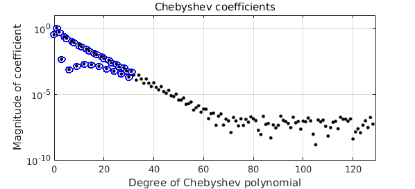
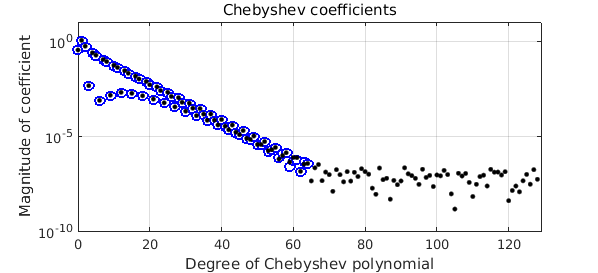
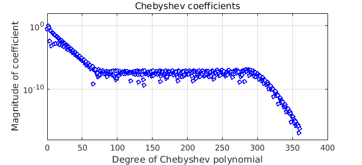
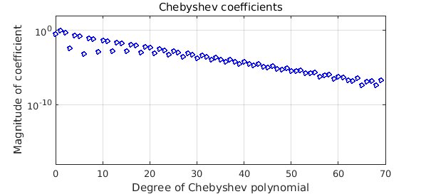
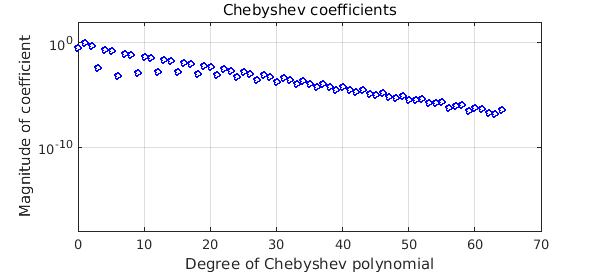
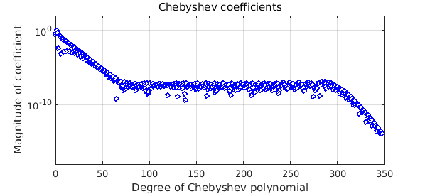

Suppose a function has some noise. What's the best way to make a chebfun of it?
For example, consider $$ f(x) = \tanh(8(x-{\textstyle{1\over 2}})) + 10^{-6} \times \hbox{noise}. $$ We can manufacture such a function in a convenient deterministic way like this:
ff = @(x) tanh(8*(x-.5)) + 1e-6*sin((1:length(x))'.^2);
If you try to make a chebfun of ff, there is no convergence:
f = chebfun(ff);
Warning: Function not resolved using 65537 pts. Have you tried 'splitting on'?
However, since we know the scale of the noise, it is easy enough to get the right effect by adjusting the Chebfun eps parameter:
f = chebfun(ff,'eps',1e-6)
f =
chebfun column (1 smooth piece)
interval length endpoint values
[ -1, 1] 65 -1 1
vertical scale = 1
How did we do? Well, one way to see is to construct a chebfun f2 of twice this degree. Here are the Chebyshev coefficients of that function (black dots) superimposed on the those of f (blue circles). The match is very satisfactory.
MS = 'markersize'; plotcoeffs(f,'ob',MS,7), ylim([1e-10 10]), hold on f2 = chebfun(ff,'eps',1e-6,'doublelength'); plotcoeffs(f2,'.k',MS,10), hold off

Now, how important was it that we got the amplitude of the noise just right? Let's repeat the experiment, but with eps increased to $10^{-3}$. As you'd expect, there is a loss of accuracy.
f = chebfun(ff,'eps',1e-3) plotcoeffs(f,'ob',MS,7), ylim([1e-10 10]), hold on plotcoeffs(f2,'.k',MS,10), hold off
f =
chebfun column (1 smooth piece)
interval length endpoint values
[ -1, 1] 32 -1 1
vertical scale = 1

And here we are with eps tightened to $10^{-9}$:
f = chebfun(ff,'eps',1e-9) plotcoeffs(f,'ob',MS,7), ylim([1e-10 10]), hold on plotcoeffs(f2,'.k',MS,10), hold off
f =
chebfun column (1 smooth piece)
interval length endpoint values
[ -1, 1] 65 -1 1
vertical scale = 1

This shows that the Chebfun constructor (the code standardChop) is pretty flexible about settling for a bit less accuracy than you hoped for. It's not completely flexible, though, and if we tighten eps by a further factor of 1000, there is nonconvergence again:
f = chebfun(ff,'eps',1e-12);
Warning: Function not resolved using 65537 pts. Have you tried 'splitting on'?
Just for fun let's illustrate what Chebfun achieves by being not completely flexible. Here is a function that is not random, but again has a plateau in its Chebyshev series down at the level of $10^{-6}$: $$ g(x) = \tanh(8(x-{\textstyle{1\over 2}})) + 10^{-6} \sin(200\exp(x)). $$
gg = @(x) tanh(8*(x-.5)) + 1e-6*sin(200*exp(x)); g = chebfun(gg); plotcoeffs(g,'ob',MS,4), ylim([1e-18 1e2])

If we construct a chebfun with eps equal to $10^{-6}$, the plateau is treated as noise and chopped off:
g = chebfun(gg,'eps',1e-6); plotcoeffs(g,'ob',MS,4), ylim([1e-18 1e2])

With eps equal to $10^{-9}$, the plateau is still treated as noise:
g = chebfun(gg,'eps',1e-9); plotcoeffs(g,'ob',MS,4), ylim([1e-18 1e2])

With eps set to $10^{-12}$, however, Chebfun is unsatisfied with the series of length 70, looks further, and correctly captures the low-amplitude component.
g = chebfun(gg,'eps',1e-12); plotcoeffs(g,'ob',MS,4), ylim([1e-18 1e2])

Reference:
J. L. Aurentz and L. N. Trefethen, "Chopping a Chebyshev series", http://arxiv.org/abs/1512.01803, December 2015.